A task is a list of sentences. Each sentence is understood on the scene, turned into the human's motion, filmed by three cameras and shown here with its videos.
0Scene
the devicethe humanthe propsthree cameras
built once per device
1Task
a goalaction sentences
written by hand
2Understand
read each sentencefind what it names in the scenecheck the device's rules
refused with a reason when it cannot be done
3Move
solve the human's motionpress keys in physicsrecord the run
the recorded motion
4Render
externalfirst-personclose-up
three cameras, three videos
5Page
sentencesvideos
this site
Example · cook a bowl in the microwave
microwave_v2_cook
51.4 sdone · 5/5 sub-goals
open the microwave door
move the bowl into the microwave
close the microwave door◆
press the Microwave key
turn the dial to 2:25◆
press the Start key◆
wait 4 seconds
press the Stop key◆
open the microwave door
move the bowl back where it was◆
What the three cameras see at the end of each sentence
sentenceexternalfirst-personhand close-up
1 · 5.9 s
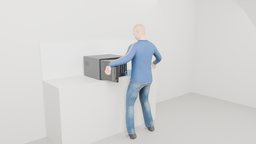
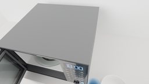
2 · 12.3 s
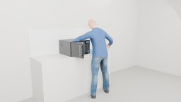
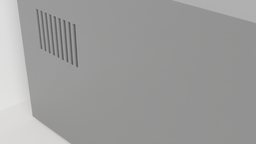
3 · 18.8 s
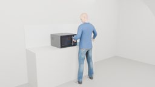
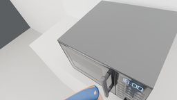
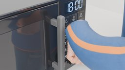
4 · 20.7 s
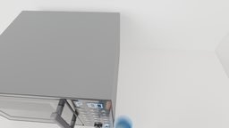
5 · 25.1 s
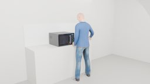
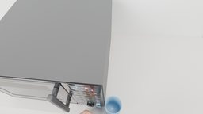
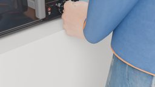
6 · 27.0 s
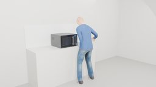
7 · 32.4 s
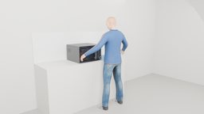
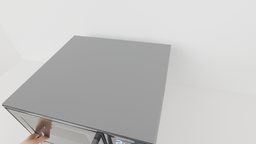
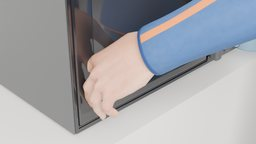
8 · 36.0 s9 · 42.4 s
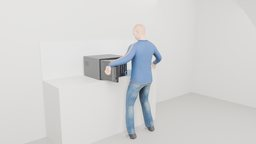
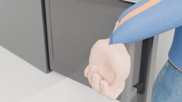
10 · 48.9 s
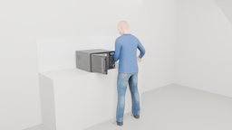
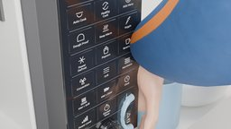
Cook a bowl for 2:25 at full microwave power, then take it out
microwave_v2_cook · external camera · 51.5 smicrowave_v2_cook · first-person camera · 51.5 smicrowave_v2_cook · hand close-up camera · 51.5 s